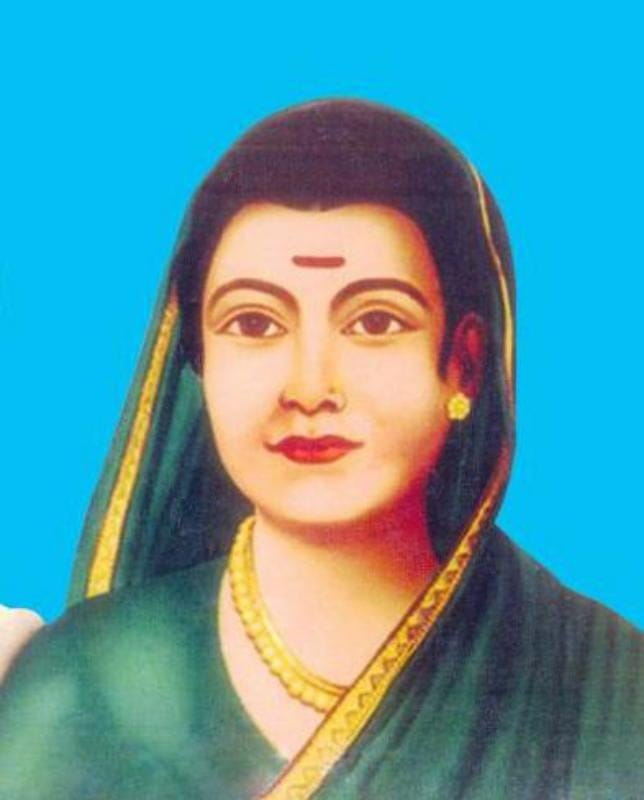

Savitribai Phule
1831-1897
Social Reformer
Savitribai Phule was an Indian social reformer, educationalist, and poet from Maharashtra. Along with her husband, Mahatma Jyotiba Phule in Maharashtra, she played an important and vital role in improving women's rights in India. She is considered to be the pioneer of India's feminist movement. Savitribai and her husband founded one of the early modern Indian girls' school in Pune, at Bhide wada in 1848. Robert May of the London Missionary Society was the first person to open a school exclusively for girls in the region of Chinsurah, Bengal, in 1818. She worked to abolish the discrimination and unfair treatment of people based on caste and gender.
Legacy
- Along with B. R. Ambedkar and Annabhau Sathe, Phule has become an icon in particular for the backward classes. Women in local branches of the Manavi Hakk Abhiyan (Human Rights Campaign, a Mang-Ambedkarite body) frequently organise processions on their jayanti (birthday in Marathi and other Indian languages).
- Pune City Corporation created a memorial for her in 1983.
- On 10 March 1998 a stamp was released by India Post in honour of Phule.
- Savitribai's birthdate, 3 January, is celebrated as Balika Din (lit. 'Girl child day') in the whole of Maharashtra, especially in girls' schools.